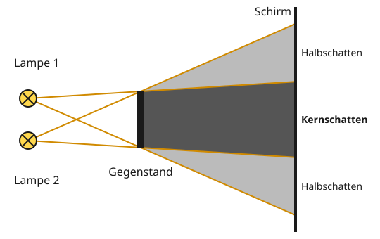

Kernschatten und Halbschatten
Mit einem KI-Tutor lernen
Ein KI-Tutor erklärt dir diese Seite und hilft dir bei den Übungen. Wähl deinen Assistenten:
Mit Claude öffnen Mit ChatGPT öffnen Mit Mistral Vibe öffnen
Du nutzt dein eigenes Konto beim Anbieter. Der Assistent ist kein Angebot von lernapps.net: lernapps liefert nur Inhalte und Übungen. Die Wahl gilt für alle Seiten, nur auf diesem Gerät.
Warum ist der Schatten am Rand heller?
Unter einer Zimmerdecke mit zwei Lampen hat deine Hand auf dem Tisch nicht einen, sondern mehrere Schatten: einen ganz dunklen und daneben hellere. Woher kommt das?
Nach dieser Seite kannst du Kernschatten und Halbschatten erklären und einzeichnen. Du brauchst dafür die Randstrahlen und den Schattenraum.
Zwei Lampen, zwei Schattenräume
Schatten ist da, wo kein Licht ist. Jede der zwei Lampen wirft ihren eigenen Schattenraum hinter den Gegenstand. Du zeichnest also vier Randstrahlen: zwei von Lampe 1 und zwei von Lampe 2, jeweils an der oberen und der unteren Kante vorbei.
- Kernschatten
Der völlig dunkle Bereich, in den von keiner Lampe Licht fällt. Dort überlappen sich die Schattenräume beider Lampen.
- Halbschatten
Ein etwas hellerer Bereich, in den Licht von nur einer Lampe fällt. Dort liegt nur der Schatten der anderen Lampe.

Dunkelgrau ist der Kernschatten, hellgrau sind die zwei Halbschatten.
Quelle: eigene Zeichnung. Lizenz: CC-BY-4.0.So liest du die Zeichnung: In den oberen hellgrauen Bereich kommt Licht von Lampe 1, aber nicht von Lampe 2. In den unteren kommt Licht von Lampe 2, aber nicht von Lampe 1. In den dunkelgrauen Bereich in der Mitte kommt von keiner Lampe Licht: Dort liegen beide Schattenräume übereinander.
Merke
Bei zwei Lichtquellen gibt es hinter einem Gegenstand Kern- und Halbschatten. Der Kernschatten ist der dunkle Bereich, in den gar kein Licht fällt; beide Schatten überlappen sich dort. Halbschatten sind die helleren Bereiche, in die nur Licht von je einer Lampe fällt.
Ausprobieren
Im Schattenlabor leuchten jetzt zwei Lampen. Der dicke schwarze Strich am Schirm zeigt den Kernschatten, der graue Strich darum herum die Halbschatten. Schiebe die Lampen mit dem dritten Regler näher zusammen und wieder auseinander. Achte darauf, wie breit der Kernschatten wird. Schiebe danach den Schirm weiter weg.
Kernschatten: 1 Kästchen, Halbschatten zusammen: 6 Kästchen.
Zwei Lampen stehen 3 Kästchen auseinander, ein 2 Kästchen hoher Gegenstand 4 Kästchen davor, der Schirm 8 Kästchen weg. Der Kernschatten ist 1 Kästchen hoch, die Halbschatten zusammen 6 Kästchen. Rücken die Lampen auf 1 Kästchen zusammen, wird der Kernschatten 3 Kästchen hoch und die Halbschatten zusammen 2 Kästchen.
Beispiel
Eine Lampe zuhalten
Im Versuch leuchten zwei Glühlampen dicht nebeneinander auf einen Gegenstand. Du hältst abwechselnd eine Lampe mit der Hand zu.
- Hältst du Lampe 1 zu, verschwindet ihr Schattenraum. Übrig bleibt nur der Schatten von Lampe 2.
- Hältst du Lampe 2 zu, bleibt nur der Schatten von Lampe 1.
- Der Kernschatten bleibt beide Male dunkel. Er liegt ja im Schatten beider Lampen.
Übung
Übung
Lösung
Richtige Antwort: A – Lampe 1; B – Gegenstand; C – Schirm; D – Kernschatten; E – Halbschatten
A ist Lampe 1, B der Gegenstand, C der Schirm. D ist dunkelgrau: Dort kommt kein Licht hin, der Kernschatten. E ist hellgrau: Dorthin kommt nur Licht von einer Lampe, ein Halbschatten.
Mehr dazu:
Übung
Lösung
dort, wo das Licht der einen Lampe hingelangt und das der anderen nicht richtige Antwort
Ein Halbschatten liegt im Schatten nur einer Lampe. Die andere Lampe beleuchtet ihn.
dort, wo von keiner Lampe Licht hingelangt
Das ist der Kernschatten. Dort überlappen sich beide Schatten.
dort, wo das Licht beider Lampen hingelangt
Dorthin kommt das ganze Licht. Das ist kein Schatten.
Halbschatten sind die etwas helleren Bereiche, in die Licht von nur einer Lampe fällt.
Mehr dazu:
Übung
Lösung
Er wird breiter. richtige Antwort
Die beiden Schattenräume liegen dann fast übereinander und überlappen mehr.
Er wird schmaler.
Schmaler wird er, wenn die Lampen weiter auseinanderrücken.
Er bleibt gleich breit.
Wenn die Lampen wandern, wandern auch ihre Schattenräume. Wie stark sie überlappen, ändert sich.
Je näher die Lampen zusammenstehen, desto mehr überlappen ihre Schattenräume und desto breiter wird der Kernschatten. Die Halbschatten werden dabei schmaler.
Mehr dazu:
Übung
Lösung
Er wird schmaler und kann ganz verschwinden. richtige Antwort
Die Randstrahlen, die den Kernschatten begrenzen, laufen aufeinander zu und kreuzen sich irgendwann.
Er wird breiter.
Breiter werden hier die Halbschatten. Den Kernschatten begrenzen Strahlen, die aufeinander zulaufen.
Er bleibt gleich breit.
Schiebe den Schirm im Labor weiter weg und lies den Kernschatten ab. Er ändert sich.
Bei diesem Aufbau wird der Kernschatten schmaler, je weiter der Schirm weg ist, und verschwindet schließlich. Die Halbschatten werden größer.
Mehr dazu:
Übung
Lösung
Richtige Antwort: Die Aussage stimmt.
In den Kernschatten kam schon vorher von keiner Lampe Licht. Hält man eine zu, ändert sich dort nichts.
Mehr dazu:
Aufgabe Nr. 1
Aufgabe Nr. 1
Stell dir von jeder Lampe die zwei Randstrahlen an den Kanten des Gegenstands vorbei bis zum Schirm vor, oder lege ein Lineal auf den Bildschirm. Tippe dann alle Felder des Schirms an, die im Kernschatten liegen. Zwei Lampen stehen übereinander, auf Höhe 0.5 und 3.5 (0 ist oben, 8 unten). Der Gegenstand steht 4 Kästchen rechts davon und reicht von Höhe 1.75 bis 4.25. Der Schirm steht 8 Kästchen rechts der Lampen und hat 8 Felder, Feld 1 oben.
Lösung
Feld 4, 5